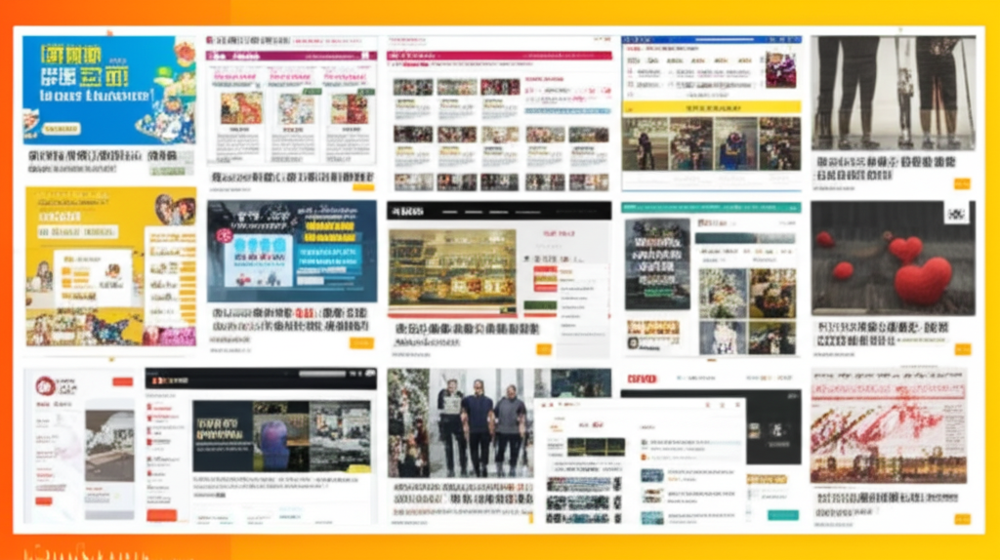

# 最新台灣焦點：超慢跑、世衛行動、與運動風潮
## 引言
近期台灣的新聞焦點多元，從衛生福利部對世衛行動的積極參與，到全民瘋迷的「超慢跑」運動，再到台北世壯運的舉辦，都展現了台灣社會的活力與對健康的重視。同時，國際新聞、財經趨勢、以及消費資訊也持續受到關注。讓我們一起深入了解這些熱門話題。
## 主體內容
### 第一點：超慢跑風靡全台
「超慢跑」成為近期台灣的熱門運動。從衛生福利部的新聞中可以發現，超慢跑已成為一種提倡的健康方式。YouTube 上也有相關影片，例如葉子老師的「猿猴式超慢跑」，可見其受歡迎程度。此外，世界新聞網也報導了超慢跑對抗老、強心、控糖的益處。甚至連瑜珈墊等相關運動產品也在 momo 購物網上熱銷，可見這股運動風潮的影響力。
### 第二點：台灣積極參與國際事務，持續推動加入WHO
衛生福利部積極參與國際事務，其世衛行動團持續努力呼籲世界支持台灣加入WHO。該部發布多則新聞稿，包括與世界醫師會高層會晤，強調台灣在國際醫療衛生體系中的重要性。
### 第三點：台北世壯運展現銀髮活力
台北世壯運不僅吸引了各年齡層的運動愛好者參與，更展現了銀髮族的活力。世界新聞網報導昆凌90歲的爺爺在標槍項目中奪金，展現了健康老齡化的風采。 88歲的「噴射機奶奶」潘秀雲的運動人生也相當勵志，證明了運動不分年齡。
## 結論
總體而言，近期台灣的新聞焦點體現了對健康生活的追求、對國際參與的積極態度，以及對各年齡層運動的鼓勵。無論是全民瘋迷的超慢跑，還是政府積極推動加入WHO，都展現了台灣社會的活力與韌性。同時，透過台北世壯運，我們也看到了銀髮族積極參與運動、享受生活的精彩樣貌。